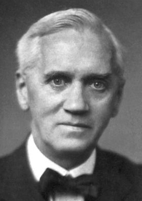
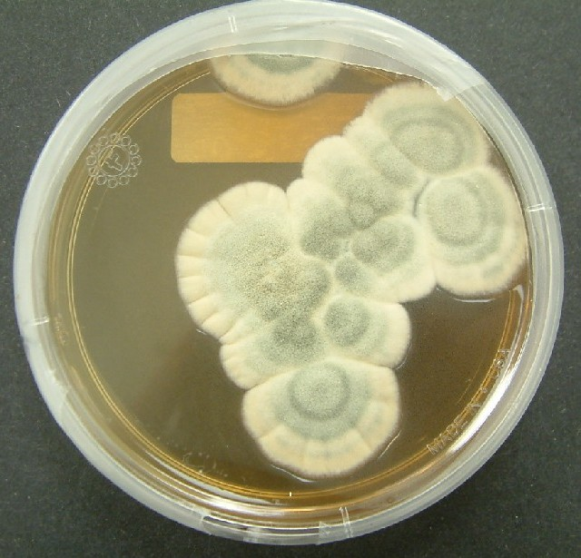
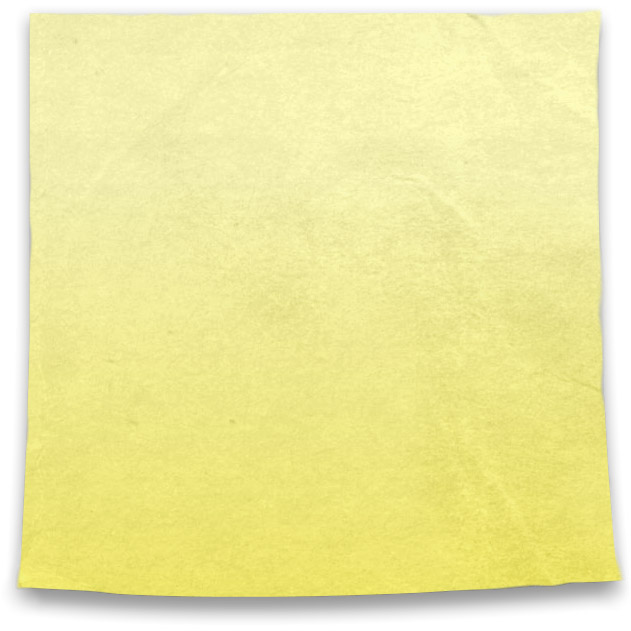

1928 · 1945 · 1968
FLEMING · SPENCER · SILVER실수의 노이즈 위에서 태어난 발견
위대한 발견은 자주 —
"어, 이상한데?"에서 시작됩니다.

1928 · FLEMING
휴가 떠난 사이 곰팡이가 자란 페트리 접시 — 그 곰팡이 주변엔 박테리아가 죽어 있었습니다. 페니실린의 시작입니다.

1945 · SPENCER
레이더 부품 앞에 서 있던 엔지니어의 호주머니 속 초콜릿이 녹아 있었습니다 — 전자레인지의 출생.

1968 · 3M SILVER
"잘 안 붙는 풀"을 만들고 실패했다고 묻혀 있던 접착제 — 10년 뒤 포스트잇이 됩니다.
셋의 공통점은 분명합니다 — 계획대로 되지 않은 것을 버리지 않고 들여다본 사람이 있었다는 것. 페니실린은 휴가의 노이즈, 전자레인지는 호주머니 속 노이즈, 포스트잇은 실패한 풀의 노이즈였습니다.
★ 정의 · SERENDIPITY
18세기 호레이스 월폴이 만든 단어 — 찾고 있지 않던 것을, 우연히, 발견하는 능력. AI 창의의 마지막 퍼즐 조각이기도 합니다.
AI에 옮기면
탐색 공간을 넓게 두고 — "이상한 결과"를 곧장 버리지 않는 설계가 필요합니다.
한 줄 요약
위대한 발견의 절반은 "버리지 않은 노이즈"입니다. 사람이든 AI든 — 이상함을 살피는 눈이 창의를 만듭니다.